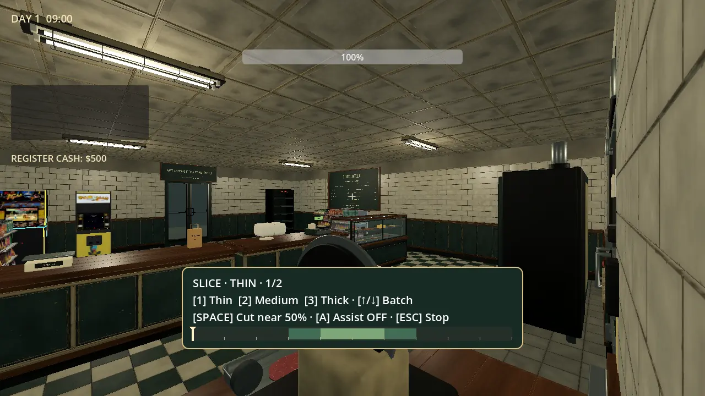
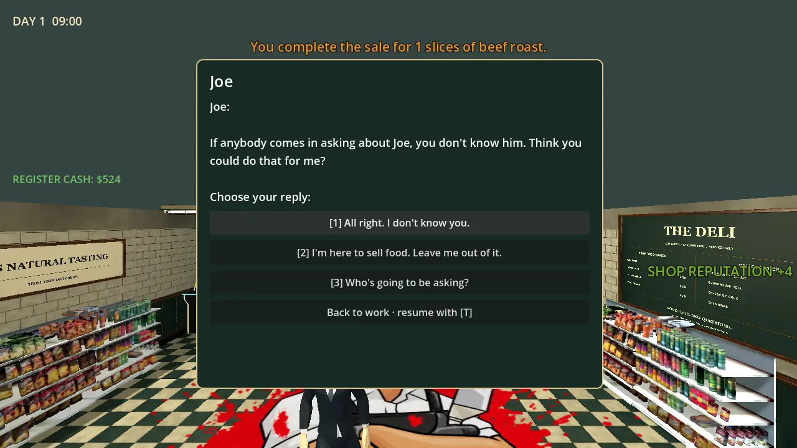
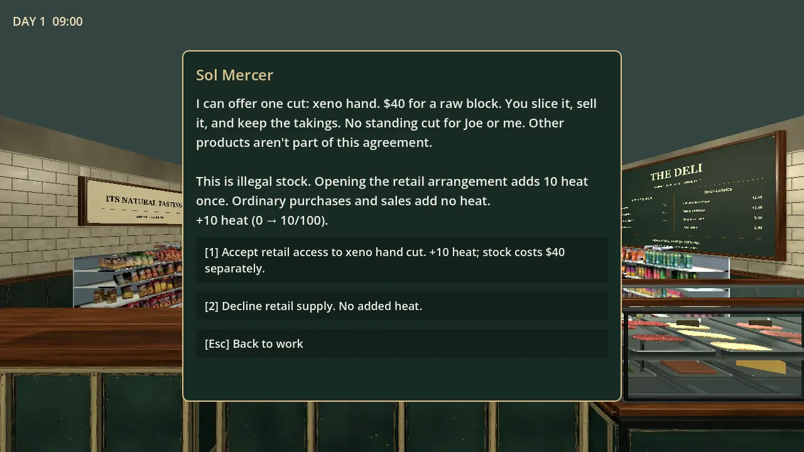

A 3D first-person shop management and narrative crime simulation built in Godot 4.7. The technical challenge is making physical kitchen operations, stock availability, customer encounters and explicit financial/heat consequences behave as a coherent system.
Godot 4.7 / GDScriptFinite-state story progression3D state persistenceAI-assisted development + QA
Customer View — original integration-test image with on-screen test overlay retained; not a concept render.
01 / THE CORE LOOP
Fulfill what the shop can actually serve
Customers queue, place orders, and wait while the player selects physical stock, chooses thin/medium/thick slicing, performs a timing-based cut, prepares products, packages them and completes checkout. Order generation checks available inventory, reservations and purchased workstations to avoid impossible requests.
Cold and prepared storage distinguish meat cuts, slice quality, thickness, expiry dates and reserved stock. Grinder and smoker operations add timed production stages without reducing everything to a generic menu.
02 / NARRATIVE SYSTEMS
Branching encounters constrained by service
Regular customers and authored stories share the active counter: Joe's cover request requires a completed roast sale; a supplier route links Gideon, Joe and Sol through sourcing and preparing an exotic cut; Denton and Sol negotiate recurring sealed parcel work.
The dialogue runner preserves the current node and line history across saves. Reading a dialogue scene pauses shift and patience timers; customer service can resume between dialogue nodes.
03 / ECONOMY + CONSEQUENCES
Two verified playable failure conditions
Daily rent, utilities, maintenance notices and loan choices generate business pressure. Rent debt of at least $100 triggers a notice and a three-day opportunity to recover; if unresolved, the game reaches EVICTION NOTICE.
Illegal parcel and supply choices disclose their heat cost before confirmation. At 60 heat, recurring parcel offers slow; at 80, warnings escalate; reaching 100 produces DELI SHUT DOWN. Passive snitch heat has been deliberately disabled in the focused runtime.
04 / PERSISTENCE + QUALITY ASSURANCE
Keep the kitchen intact across save/load
Versioned JSON persistence rebuilds partly cut blocks, loose slices, wrapped bundles, active workstation timers, customer orders, dialogue progress and shop finances. A separate focused-playtest scene provides 25 checkpoint scenarios and isolated save state for fast branch testing.
The supplied audit cites five focused Godot SceneTree test suites with a combined 216 checks and zero reported failures; those are audit-reported results, not a new independent re-run in this portfolio update.
EVIDENCE / ACTUAL GODOT CAPTURES
Playtest evidence
Active customer queue in the main game

Interactive slicing with timing and thickness controlsInventory and seeded landlord warning in test state

Joe cover request after completed service

Exotic supply negotiation and stated heat costChoice warning at deliberately seeded 90 heat